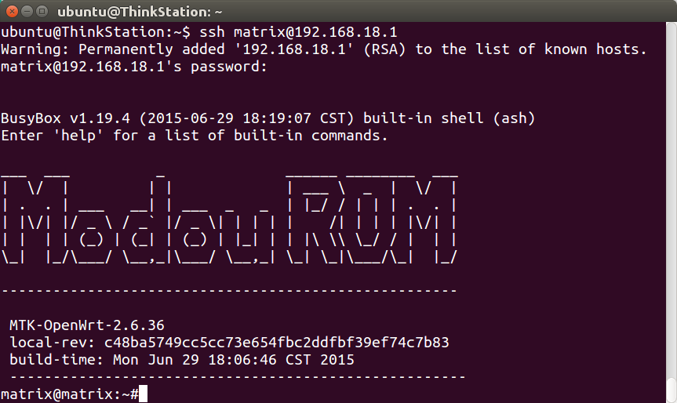
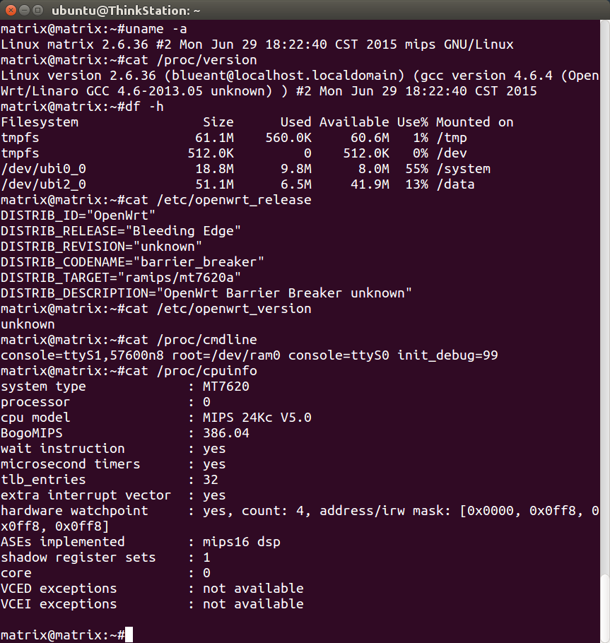
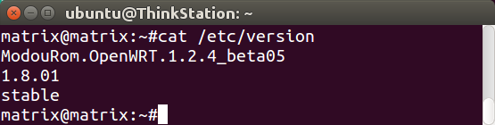
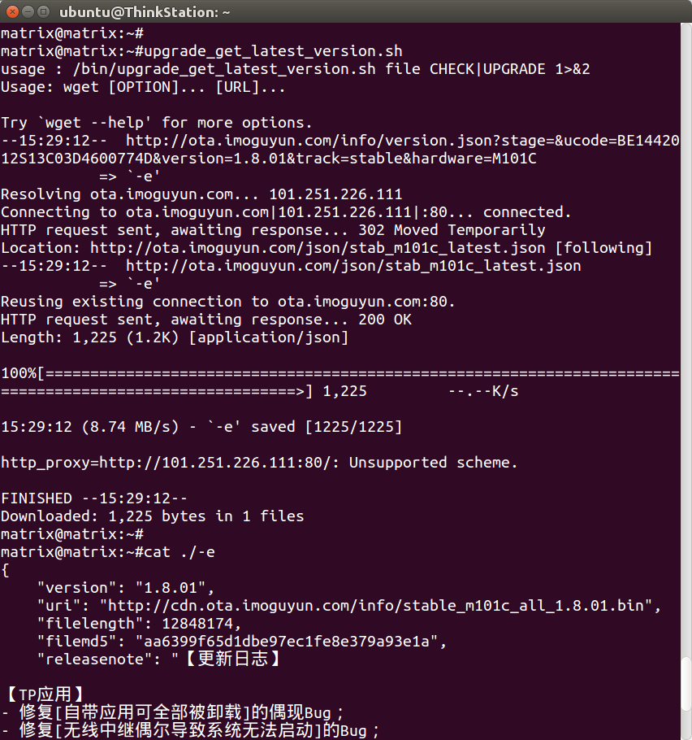
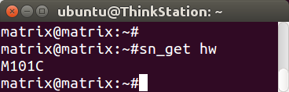

魔豆固件下载（内部版inter、 开发版main 和稳定版stable）
| rom版本 | M101C硬件 | M101A硬件 |
|---|---|---|
| 开发版 1.8.05 | main_m101c_all_1.8.05.bin | main_m101a_all_1.8.05.bin |
| 开发版 1.8.04 | main_m101c_all_1.8.04.bin | main_m101a_all_1.8.04.bin |
| 稳定版 1.8.01 | stable_m101c_all_1.8.01.bin | stable_m101a_all_1.8.01.bin |
| 稳定版 1.7.01 | stable_m101c_all_1.7.01.bin | stable_m101a_all_1.7.01.bin |
| 开发版 0.6.28 | main_m101a_all_0.6.28.bin | |
| 稳定版 0.5.20 | stable_m101a_all_0.5.20.bin |
魔豆 root
魔豆路由器开放root，按照文档开启即可（http://bbs.modouwifi.cn/thread-8825-1-1.html））。开启以后，ssh指令如下：
ssh matrix@192.168.18.1

分区、内核等系统信息

查看rom版本
cat /etc/version

检查最新rom版本
upgrade_get_latest_version.sh

查看设备型号（比如M101A、 M101C）
sn_get hw

手动升级rom
wget -O /data/upgrade/update.bin http://cdn.ota.imoguyun.com/info/main_m101c_all_1.8.05.bin
upgrade.sh . /data/upgrade/update.bin
reboot
魔豆 M101C kernel vermagic
| rom | kernel vermagic |
|---|---|
| 1.8.05 | 2.6.36-1-556ed122e9e29dcbf944aed81514ec3d |
| 1.8.01 | 2.6.36-1-556ed122e9e29dcbf944aed81514ec3d |
| 1.7.01 | 2.6.36-1-c17fba68da07c209be57c5995a445463 |